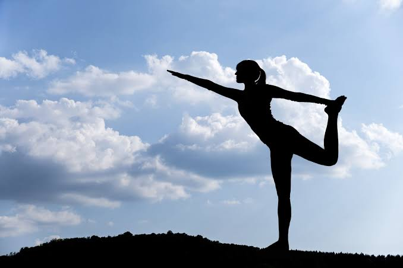

Begin gently
Try five to ten minutes of comfortable movement. Build duration slowly as your body becomes familiar with it.

Physical activity
Regular movement can help reduce the physical effects of sitting for long periods. Even short activity breaks can support your energy, mood, flexibility, and overall wellbeing throughout the workday.
Explore the benefits →The bigger picture
Physical activity helps your heart, muscles, bones, balance, and lungs work well. It can also reduce stress, support sleep, improve concentration, and give you a chance to connect with people or the world around you.
The best activity is one you can return to. Walking, dancing, stretching, cycling, sport, gardening, and active play all count.
Start where you are
Try five to ten minutes of comfortable movement. Build duration slowly as your body becomes familiar with it.
Music, a scenic route, a class, or a friend can make activity feel less like a task and more like part of your life.
Pay attention to your mood, energy, sleep, and confidence. Progress is more than a number or a distance.
A flexible plan
Take a brisk walk, cycle, swim, dance, or play a game that gently raises your breathing.
Use bodyweight exercises, resistance bands, weights, or everyday lifting to build strength.
Include mobility, balance, and gentle stretching. Rest days are part of a healthy routine too.
Listen to your body
Warm up gradually, drink water, wear suitable shoes, and choose an intensity that lets you stay in control. You should feel challenged, not overwhelmed.
Stop and seek medical advice if you experience chest pain, faintness, severe shortness of breath, or unusual pain. If you have a health condition or are returning after an injury, ask a health professional for advice that fits you.